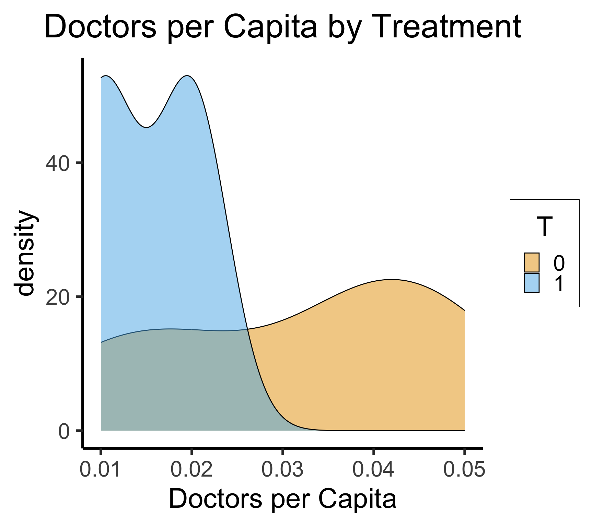

Code
source("../dsan-globals/_globals.r")
set.seed(5300)DSAN 5300: Statistical Learning
Spring 2025, Georgetown University
Today’s Planned Schedule:
| Start | End | Topic | |
|---|---|---|---|
| Lecture | 6:30pm | 7:00pm | Fundamental Problem of Causal Inference → |
| 7:00pm | 7:20pm | Apples to Apples → | |
| 7:20pm | 8:00pm | How Can Machine Learning Help? → | |
| Break! | 8:00pm | 8:10pm | |
| 8:10pm | 9:00pm | Causal Forests → |
source("../dsan-globals/_globals.r")
set.seed(5300)\[ \DeclareMathOperator*{\argmax}{argmax} \DeclareMathOperator*{\argmin}{argmin} \newcommand{\bigexp}[1]{\exp\mkern-4mu\left[ #1 \right]} \newcommand{\bigexpect}[1]{\mathbb{E}\mkern-4mu \left[ #1 \right]} \newcommand{\definedas}{\overset{\small\text{def}}{=}} \newcommand{\definedalign}{\overset{\phantom{\text{defn}}}{=}} \newcommand{\eqeventual}{\overset{\text{eventually}}{=}} \newcommand{\Err}{\text{Err}} \newcommand{\expect}[1]{\mathbb{E}[#1]} \newcommand{\expectsq}[1]{\mathbb{E}^2[#1]} \newcommand{\fw}[1]{\texttt{#1}} \newcommand{\given}{\mid} \newcommand{\green}[1]{\color{green}{#1}} \newcommand{\heads}{\outcome{heads}} \newcommand{\iid}{\overset{\text{\small{iid}}}{\sim}} \newcommand{\lik}{\mathcal{L}} \newcommand{\loglik}{\ell} \DeclareMathOperator*{\maximize}{maximize} \DeclareMathOperator*{\minimize}{minimize} \newcommand{\mle}{\textsf{ML}} \newcommand{\nimplies}{\;\not\!\!\!\!\implies} \newcommand{\orange}[1]{\color{orange}{#1}} \newcommand{\outcome}[1]{\textsf{#1}} \newcommand{\param}[1]{{\color{purple} #1}} \newcommand{\pgsamplespace}{\{\green{1},\green{2},\green{3},\purp{4},\purp{5},\purp{6}\}} \newcommand{\prob}[1]{P\left( #1 \right)} \newcommand{\purp}[1]{\color{purple}{#1}} \newcommand{\sign}{\text{Sign}} \newcommand{\spacecap}{\; \cap \;} \newcommand{\spacewedge}{\; \wedge \;} \newcommand{\tails}{\outcome{tails}} \newcommand{\Var}[1]{\text{Var}[#1]} \newcommand{\bigVar}[1]{\text{Var}\mkern-4mu \left[ #1 \right]} \]
The only workable definition of “\(X\) causes \(Y\)”:
Seemingly-reasonable assumption: Button-pushes cause outcomes in games…
During the race, an ionizing particle from outer space collided with DOTA_Teabag’s N64, flipping the eighth bit of Mario’s first height byte. Specifically, it flipped the byte from 11000101 to 11000100, from “C5” to “C4”. This resulted in a height change from C5837800 to C4837800, which by complete chance, happened to be the exact amount needed to warp Mario up to the higher floor at that exact moment.
This was tested by pannenkoek12 - the same person who put up the bounty - using a script that manually flipped that particular bit at the right time, confirming the suspicion of a bit flip.

Matching constructs pairs of belligerents that are similar across a wide range of traits thought to dictate battlefield performance but that vary in levels of prewar inequality. The more similar the belligerents, the better our estimate of inequality’s effects, as all other traits are shared and thus cannot explain observed differences in performance, helping assess how battlefield performance would have improved (declined) if the belligerent had a lower (higher) level of prewar inequality.
Since [non-matched] cases are dropped […] selected cases are more representative of average belligerents/wars than outliers with few or no matches, [providing] surer ground for testing generalizability of the book’s claims than focusing solely on canonical but unrepresentative usual suspects (Germany, the United States, Israel)
Covariates |
Sultanate of Morocco Spanish-Moroccan War, 1859-60 |
Khanate of Kokand War with Russia, 1864-65 |
|---|---|---|
| \(X\): Military Inequality | Low (0.01) | Extreme (0.70) |
| \(\mathbf{Z}\): Matched Covariates: | ||
| Initial relative power | 66% | 66% |
| Total fielded force | 55,000 | 50,000 |
| Regime type | Absolutist Monarchy (−6) | Absolute Monarchy (−7) |
| Distance from capital | 208km | 265km |
| Standing army | Yes | Yes |
| Composite military | Yes | Yes |
| Initiator | No | No |
| Joiner | No | No |
| Democratic opponent | No | No |
| Great Power | No | No |
| Civil war | No | No |
| Combined arms | Yes | Yes |
| Doctrine | Offensive | Offensive |
| Superior weapons | No | No |
| Fortifications | Yes | Yes |
| Foreign advisors | Yes | Yes |
| Terrain | Semiarid coastal plain | Semiarid grassland plain |
| Topography | Rugged | Rugged |
| War duration | 126 days | 378 days |
| Recent war history w/opp | Yes | Yes |
| Facing colonizer | Yes | Yes |
| Identity dimension | Sunni Islam/Christian | Sunni Islam/Christian |
| New leader | Yes | Yes |
| Population | 8–8.5 million | 5–6 million |
| Ethnoling fractionalization (ELF) | High | High |
| Civ-mil relations | Ruler as commander | Ruler as commander |
| \(Y\): Battlefield Performance: | ||
| Loss-exchange ratio | 0.43 | 0.02 |
| Mass desertion | No | Yes |
| Mass defection | No | No |
| Fratricidal violence | No | Yes |
library(tidyverse)── Attaching core tidyverse packages ──────────────────────── tidyverse 2.0.0 ──
✔ dplyr 1.1.4 ✔ readr 2.1.5
✔ forcats 1.0.0 ✔ stringr 1.5.1
✔ lubridate 1.9.3 ✔ tibble 3.2.1
✔ purrr 1.0.2 ✔ tidyr 1.3.1
── Conflicts ────────────────────────────────────────── tidyverse_conflicts() ──
✖ dplyr::filter() masks stats::filter()
✖ dplyr::lag() masks stats::lag()
ℹ Use the conflicted package (<http://conflicted.r-lib.org/>) to force all conflicts to become errorsvillage_df <- tribble(
~village_id, ~T, ~inf_mortality,
1, 1, 10,
2, 1, 15,
3, 1, 22,
4, 1, 19,
5, 0, 25,
6, 0, 19,
7, 0, 4,
8, 0, 8,
9, 0, 6
) |> mutate(T = factor(T))
village_df| village_id | T | inf_mortality |
|---|---|---|
| 1 | 1 | 10 |
| 2 | 1 | 15 |
| 3 | 1 | 22 |
| 4 | 1 | 19 |
| 5 | 0 | 25 |
| 6 | 0 | 19 |
| 7 | 0 | 4 |
| 8 | 0 | 8 |
| 9 | 0 | 6 |
village_df |> group_by(T) |>
summarize(mean_mortality = mean(inf_mortality)) |>
arrange(desc(T))| T | mean_mortality |
|---|---|
| 1 | 16.5 |
| 0 | 12.4 |
Health clinics increased mortality by 4.1?
covar_df <- tribble(
~poverty_rate, ~docs_per_capita,
0.5, 0.01,
0.6, 0.02,
0.7, 0.01,
0.6, 0.02,
0.6, 0.01,
0.5, 0.02,
0.1, 0.04,
0.3, 0.05,
0.2, 0.04,
)
village_df <- bind_cols(village_df, covar_df)
village_df| village_id | T | inf_mortality | poverty_rate | docs_per_capita |
|---|---|---|---|---|
| 1 | 1 | 10 | 0.5 | 0.01 |
| 2 | 1 | 15 | 0.6 | 0.02 |
| 3 | 1 | 22 | 0.7 | 0.01 |
| 4 | 1 | 19 | 0.6 | 0.02 |
| 5 | 0 | 25 | 0.6 | 0.01 |
| 6 | 0 | 19 | 0.5 | 0.02 |
| 7 | 0 | 4 | 0.1 | 0.04 |
| 8 | 0 | 8 | 0.3 | 0.05 |
| 9 | 0 | 6 | 0.2 | 0.04 |
village_df |> ggplot(aes(x = poverty_rate, fill=T)) +
geom_density(alpha=0.5) +
theme_dsan(base_size=30) +
labs(
title = "Poverty Rate by Treatment",
x = "Poverty Rate"
)
village_df |> ggplot(aes(x = docs_per_capita, fill=T)) +
geom_density(alpha=0.5) +
theme_dsan(base_size=30) +
labs(
title = "Doctors per Capita by Treatment",
x = "Doctors per Capita"
)
prop_model <- glm(
T ~ poverty_rate + docs_per_capita,
data=village_df, family="binomial"
)
summary(prop_model)
Call:
glm(formula = T ~ poverty_rate + docs_per_capita, family = "binomial",
data = village_df)
Coefficients:
Estimate Std. Error z value Pr(>|z|)
(Intercept) -7.498 8.992 -0.834 0.404
poverty_rate 14.500 13.651 1.062 0.288
docs_per_capita -8.880 143.595 -0.062 0.951
(Dispersion parameter for binomial family taken to be 1)
Null deviance: 12.3653 on 8 degrees of freedom
Residual deviance: 6.9987 on 6 degrees of freedom
AIC: 12.999
Number of Fisher Scoring iterations: 6village_df$ps <- predict(prop_model, village_df, type="response")
village_df| village_id | T | inf_mortality | poverty_rate | docs_per_capita | ps |
|---|---|---|---|---|---|
| 1 | 1 | 10 | 0.5 | 0.01 | 0.4165712 |
| 2 | 1 | 15 | 0.6 | 0.02 | 0.7358171 |
| 3 | 1 | 22 | 0.7 | 0.01 | 0.9284516 |
| 4 | 1 | 19 | 0.6 | 0.02 | 0.7358171 |
| 5 | 0 | 25 | 0.6 | 0.01 | 0.7527140 |
| 6 | 0 | 19 | 0.5 | 0.02 | 0.3951619 |
| 7 | 0 | 4 | 0.1 | 0.04 | 0.0016534 |
| 8 | 0 | 8 | 0.3 | 0.05 | 0.0268029 |
| 9 | 0 | 6 | 0.2 | 0.04 | 0.0070107 |
cur_T <- village_df[1,"T"] |> pull()
cur_ps <- village_df[1,"ps"] |> pull()
writeLines(paste0("Current village: T = ",cur_T,", ps = ",cur_ps))Current village: T = 1, ps = 0.416571242858422other_df <- village_df |> filter(T != cur_T) |>
mutate(
ps_dist = abs(ps - cur_ps)
)
other_df |> select(-c(inf_mortality))| village_id | T | poverty_rate | docs_per_capita | ps | ps_dist |
|---|---|---|---|---|---|
| 5 | 0 | 0.6 | 0.01 | 0.7527140 | 0.3361428 |
| 6 | 0 | 0.5 | 0.02 | 0.3951619 | 0.0214093 |
| 7 | 0 | 0.1 | 0.04 | 0.0016534 | 0.4149179 |
| 8 | 0 | 0.3 | 0.05 | 0.0268029 | 0.3897683 |
| 9 | 0 | 0.2 | 0.04 | 0.0070107 | 0.4095605 |
for (i in 1:9) {
cur_T <- village_df[i,"T"] |> pull()
cur_ps <- village_df[i,"ps"] |> pull()
# writeLines(paste0("Current village: T = ",cur_T,", ps = ",cur_ps))
other_df <- village_df |> filter(T != cur_T) |>
mutate(
ps_dist = abs(ps - cur_ps)
)
match_id <- names(which.min(other_df$ps_dist))
village_df[i,"match"] <- as.numeric(match_id)
}
village_df |> select(-inf_mortality)| village_id | T | poverty_rate | docs_per_capita | ps | match |
|---|---|---|---|---|---|
| 1 | 1 | 0.5 | 0.01 | 0.4165712 | 6 |
| 2 | 1 | 0.6 | 0.02 | 0.7358171 | 5 |
| 3 | 1 | 0.7 | 0.01 | 0.9284516 | 5 |
| 4 | 1 | 0.6 | 0.02 | 0.7358171 | 5 |
| 5 | 0 | 0.6 | 0.01 | 0.7527140 | 2 |
| 6 | 0 | 0.5 | 0.02 | 0.3951619 | 1 |
| 7 | 0 | 0.1 | 0.04 | 0.0016534 | 1 |
| 8 | 0 | 0.3 | 0.05 | 0.0268029 | 1 |
| 9 | 0 | 0.2 | 0.04 | 0.0070107 | 1 |
treated_df <- village_df |> filter(T == 1)
(matched_df <- treated_df |> left_join(village_df, join_by(match == village_id)))| village_id | T.x | inf_mortality.x | poverty_rate.x | docs_per_capita.x | ps.x | match | T.y | inf_mortality.y | poverty_rate.y | docs_per_capita.y | ps.y | match.y |
|---|---|---|---|---|---|---|---|---|---|---|---|---|
| 1 | 1 | 10 | 0.5 | 0.01 | 0.4165712 | 6 | 0 | 19 | 0.5 | 0.02 | 0.3951619 | 1 |
| 2 | 1 | 15 | 0.6 | 0.02 | 0.7358171 | 5 | 0 | 25 | 0.6 | 0.01 | 0.7527140 | 2 |
| 3 | 1 | 22 | 0.7 | 0.01 | 0.9284516 | 5 | 0 | 25 | 0.6 | 0.01 | 0.7527140 | 2 |
| 4 | 1 | 19 | 0.6 | 0.02 | 0.7358171 | 5 | 0 | 25 | 0.6 | 0.01 | 0.7527140 | 2 |
matched_df |> summarize(
mean_tr = mean(inf_mortality.x),
mean_control = mean(inf_mortality.y)
)| mean_tr | mean_control |
|---|---|
| 16.5 | 23.5 |